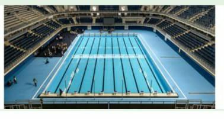

Tipos de Piscina
As piscinas para natação competitiva são geralmente divididas em dois tipos: piscina olímpica (50 metros) e piscina semiolímpica (25 metros).
Regras
As principais regras da natação incluem a largada, virada e chegada. Cada estilo de nado possui suas próprias regras específicas, que devem ser seguidas para evitar a desclassificação.
Tipos de Nado
Crawl
O crawl é o estilo de nado mais rápido e popular. É caracterizado por um movimento alternado dos braços e um movimento de batida de pernas.
Costas
O nado de costas é nadado de costas com um movimento alternado dos braços e uma batida de pernas contínua.
Peito
O nado peito é caracterizado por um movimento simultâneo dos braços em um arco e uma batida de pernas em forma de sapo.
Borboleta
O nado borboleta é nadado com um movimento simultâneo dos braços e uma batida de pernas em forma de golfinho.
Competições
As competições de natação podem ser realizadas em piscinas olímpicas ou semiolímpicas, e incluem provas de diferentes distâncias e estilos. As competições podem ser individuais ou em revezamento.
Nados Completo
A natação inclui quatro estilos principais de nado: crawl, costas, peito e borboleta. Cada um desses estilos tem suas próprias técnicas e regras específicas.